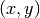
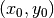
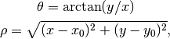
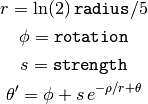
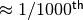
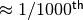

Swirl¶
Image swirling is a non-linear image deformation that creates a whirlpool effect. This example describes the implementation of this transform in skimage, as well as the underlying warp mechanism.
Image warping¶
When applying a geometric transformation on an image, we typically make use of a reverse mapping, i.e., for each pixel in the output image, we compute its corresponding position in the input. The reason is that, if we were to do it the other way around (map each input pixel to its new output position), some pixels in the output may be left empty. On the other hand, each output coordinate has exactly one corresponding location in (or outside) the input image, and even if that position is non-integer, we may use interpolation to compute the corresponding image value.
Performing a reverse mapping¶
To perform a geometric warp in skimage, you simply need to provide the reverse mapping to the skimage.transform.warp function. E.g., consider the case where we would like to shift an image 50 pixels to the left. The reverse mapping for such a shift would be:
def shift_left(xy):
xy[:, 0] += 50
return xy
The corresponding call to warp is:
from skimage.transform import warp
warp(image, shift_left)
The swirl transformation¶
Consider the coordinate  in the output image. The reverse mapping for the swirl transformation first computes, relative to a center , its polar coordinates,

and then transforms them according to

where strength is a parameter for the amount of swirl, radius indicates
the swirl extent in pixels, and rotation adds a rotation angle. The
transformation of radius into  is to ensure that the
transformation decays to  within the
specified radius.
is to ensure that the
transformation decays to  within the
specified radius.
from skimage import data
from skimage.transform import swirl
import matplotlib.pyplot as plt
image = data.checkerboard()
swirled = swirl(image, rotation=0, strength=10, radius=120, order=2)
f, (ax0, ax1) = plt.subplots(1, 2, figsize=(8, 3))
ax0.imshow(image, cmap=plt.cm.gray, interpolation='none')
ax0.axis('off')
ax1.imshow(swirled, cmap=plt.cm.gray, interpolation='none')
ax1.axis('off')
plt.show()
Python source code: download (generated using skimage 0.6)